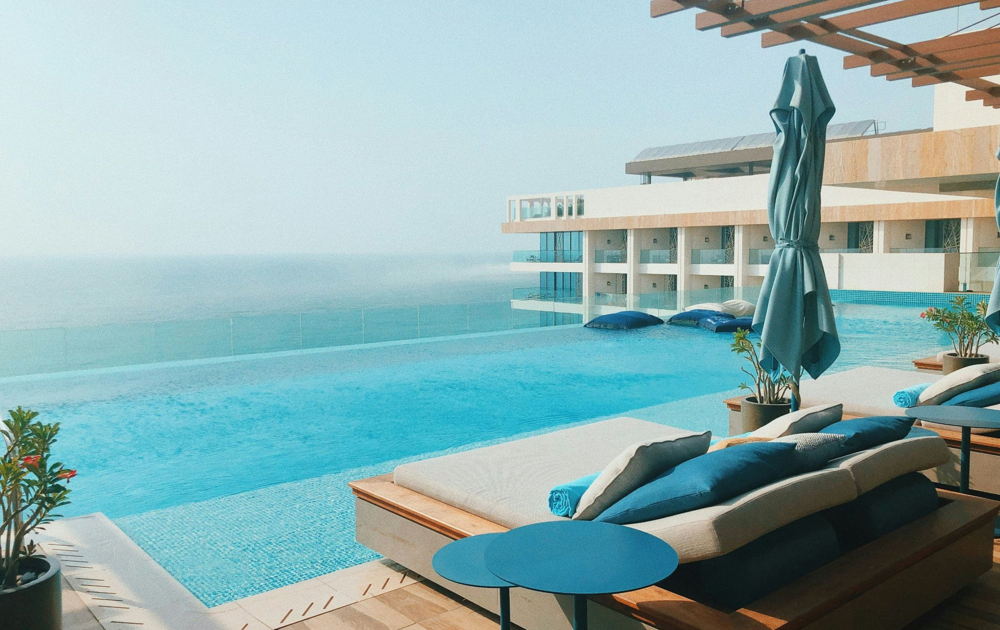

Поиск объектов для инвестиций · От Малаги до Гибралтара
Отели, курортная земля и жилые проекты на Коста-дель-Соль
Green Future Capital работает на месте, в Сотогранде. Мы находим объекты напрямую у собственников и девелоперов, готовим их по институциональному стандарту и представляем фондам и семейным офисам.
Фокус
Три типа объектов на одном побережье
Мы намеренно работаем узко. Знание участков, собственников и муниципалитетов одного побережья даёт инвестору больше, чем широкий каталог.

Отели и курорты
Действующие и закрытые отели с потенциалом репозиционирования, а также курорты, подходящие для брендированных резиденций.
Инвестиции в отели
Земля под застройку
Участки с утверждённой градостроительной документацией под отель, брендированные резиденции или виллы.
Земля под застройку
Жилые проекты
Девелоперские проекты, в которых местный застройщик ищет партнёра по капиталу или полный выход.
Жилые проектыСельскохозяйственные земли Андалусии. Орошаемые хозяйства от 100 гектаров рассматриваем по запросу для профильных инвесторов.
Инвесторам
Партнёр на месте, который приносит объект, а не объявление
Мы выходим на собственников напрямую и работаем по письменному мандату. Вы получаете объекты, которых нет на порталах, с уже проверенными титулом, градостроительным статусом и намерениями продавца.
Собственникам и девелоперам
Международные покупатели без огласки
Если у вас есть отель, участок или проект и вы ищете покупателя или партнёра по капиталу, мы готовим объект и представляем его инвесторам, которые уже покупают в Испании.
Процесс
От первого контакта до закрытия сделки
Каждый шаг документируется. Сведения об объекте передаются только после подписания соглашения о конфиденциальности.
- ТизерТип объекта, размер, район и диапазон цены. Без названия и адреса.
- NDAИнвестор подписывает соглашение о конфиденциальности и вознаграждении.
- МеморандумТитул, градостроительный статус, финансовая модель и фотографии.
- Просмотр и проверкаВыезд на объект, встречи с собственником, юристами и муниципалитетом.
- Оферта и закрытиеСопровождение переговоров до нотариуса.
Рынок
Капитал уже приходит
Коста-дель-Соль занимает второе место в Испании по объёму инвестиций в отели после Балеарских островов.
Инвестиции в отели Коста-дель-Соль за первое полугодие 2026 года.
Источник: Colliers, Hotel Investment Spain H1 2026Инвестиции в отели Испании за тот же период, на 26,5 % больше, чем годом ранее.
Источник: Colliers, Hotel Investment Spain H1 2026Цена курорта Fairmont La Hacienda в Сан-Роке, рядом с Сотогранде, в 2025 году.
Источник: сообщение ActivumSG, август 2025 годаИзбранные объекты
Объекты, которые мы можем показать открыто
Основные объекты, с которыми мы работаем, не выставлены на открытый рынок и представляются по запросу, после подписания соглашения о конфиденциальности. Ниже — те, которые собственники разрешили показывать открыто.
Контакты
Запросить актуальные объекты или представить свой объект
Напишите несколько строк о ваших инвестиционных критериях или о вашем объекте. Мы отвечаем в течение двух рабочих дней и до передачи любых сведений подписываем соглашение о конфиденциальности.
- Эл. почта
- invest@greenfuturecapital.es
- Телефон и WhatsApp
- +34 612 214 720
- Офис
- Сотогранде, Сан-Роке, Кадис
- Сайт
- www.greenfuturecapital.es